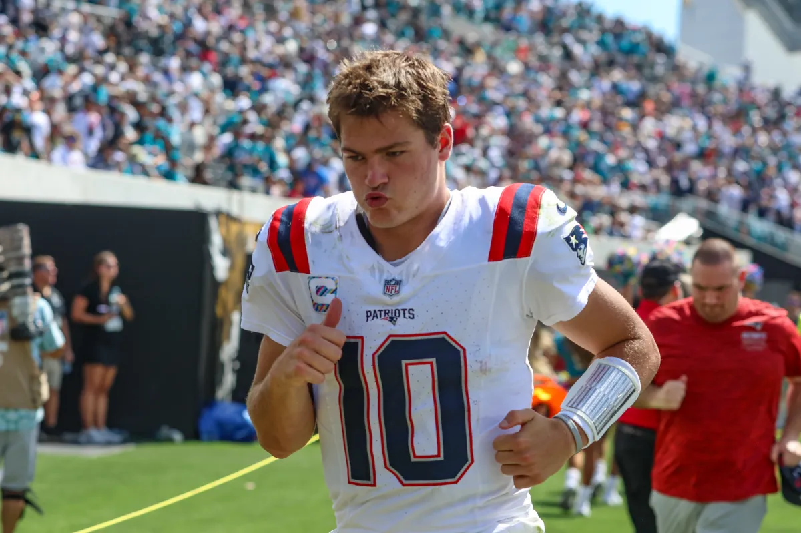

Carlos José Villanueva Ramos
📅 September 30, 2026
🏈 Calm in New England: Drake Maye Assures His Shoulder Is Intact and Dismisses Friction with Mike Vrabel
oh no Drake Maye... pic.twitter.com/uwCHx632lv
— Arye Pulli (@AryePulliNFL) September 27, 2026
An analysis article on the internal situation of the New England Patriots on "NFL.com".
Storm clouds continue to gather in Foxborough, combining a complex sporting moment with physical concerns surrounding their young star quarterback, Drake Maye.
The passer set off alarms by appearing on the weekly injury report due to right shoulder discomfort; however, to the coaching staff's relief, he worked fully in practice and cleared up any doubts when questioned directly by the media.
Maye was categorical in pointing out that his physical ailments do not condition his throwing mechanics or his decision-making on the gridiron.
Instead, the quarterback redirected the self-critique toward the costly turnovers that dragged the team down, especially following the painful defeat suffered against Jacksonville.
Likewise, head coach Mike Vrabel flatly denied rumors of supposed internal conflicts and friction with the front office, reaffirming his total commitment to the project thanks to Maye's presence on the team.
This is my summary of the article by writer Nick Shook.
💬 Featured comment from the news: «Believe it or not, I had choices as to where I wanted to coach.
I wanted to coach here because Drake was the quarterback» (Believe it or not, I had choices as to where I wanted to coach.
I wanted to coach here because Drake was the quarterback), emphasized coach Mike Vrabel while sharply dismissing rumors about alleged internal conflicts within the organization.

Drake Maye fumbles in ball protection drill from a Christian Elliss punch.
— Kevin Moore (@KMooreTV) September 30, 2026
RB's coach Tony Dews reminds Maye, high and tight. @NBC10 pic.twitter.com/P9F8kD2amH
Source: Nick Shook, NFL.com